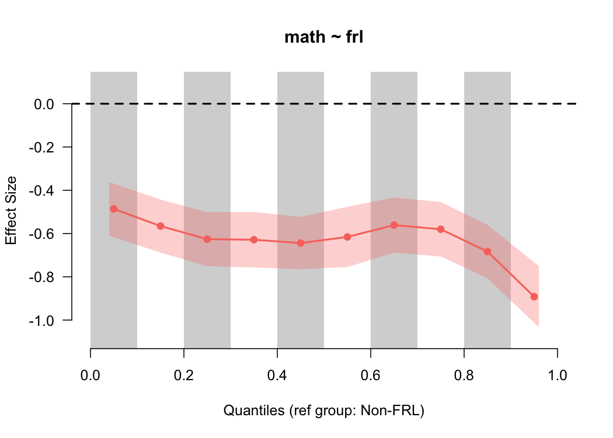
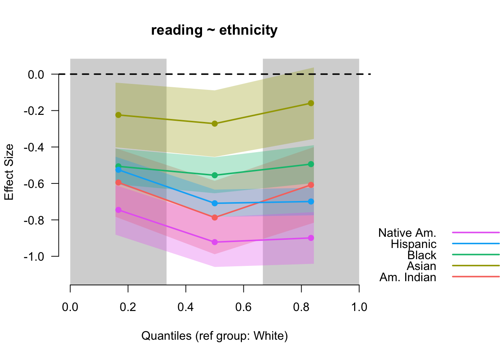
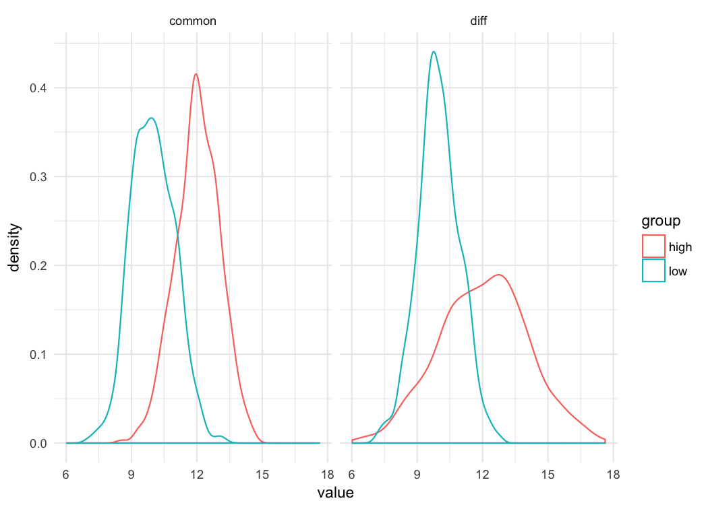
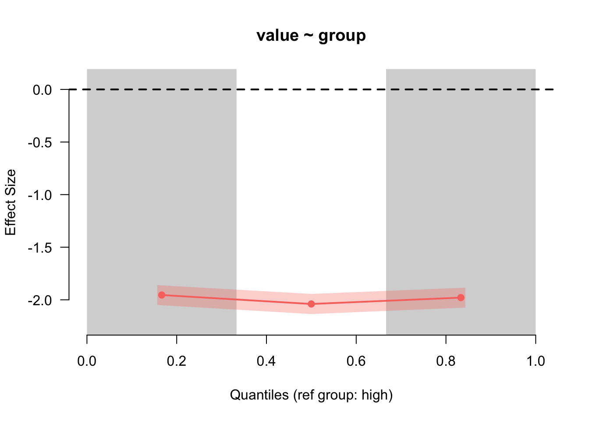

esvis: Binned Effect Size Plots
Contents
In this post, I’d like to share one of the more unique plots from esvis - the binned effect size plot. The overall purpose of the binned effect size plot is to evaluate if the differences between two distributions are consistent across the scale. We’ll start with a quick example from the package, and then move to a simulated data example.
Quick example
The API for esvis is consistent across functions, so we use the same outcome ~ predictor forumula as the first argument, followed by the data for all functions. To evaluate the difference between the achievement gap for students who are and are not eligible for free or reduced price lunch, using the built-in benchmarks dataset, we call
library(esvis)
binned_plot(math ~ frl, benchmarks)
 By default, this provides the difference between students who are and are not eligible for free or reduced price lunch for the lower third, middle third, and upper third of the distribution, in terms of an effect size (Cohen’s $d$). The standard error is also displayed by the shading, which is consistent across the scale because the sample size is relatively consistent across bins (by design), and the size of the standard error is driven primarily by the sample size.
By default, this provides the difference between students who are and are not eligible for free or reduced price lunch for the lower third, middle third, and upper third of the distribution, in terms of an effect size (Cohen’s $d$). The standard error is also displayed by the shading, which is consistent across the scale because the sample size is relatively consistent across bins (by design), and the size of the standard error is driven primarily by the sample size.
In this case, we see that the difference is pretty consistent across the scale, although there’s modest evidence that the gap is larger at the upper end of the scale. We can get a more nuanced view by making the quantile bins smaller - say, deciles.
binned_plot(math ~ frl, benchmarks, qtiles = seq(0, 1, .1))

Notice that the size of the standard error has now increased because there’s fewer students in each bin, and we now have more convincing evidence that the gap is larger at the top of the scale. However, we also have to be careful here, because the smaller we make the bins, the fewer students there are represented in each bin from which to calculate the effect size. We can check these numbers quickly by feeding our same input into the qtile_n function.
qtile_n(math ~ frl, benchmarks, qtiles = seq(0, 1, .1))
## group low_qtile high_qtile n
## Non-FRL.(155,184] Non-FRL 0.0 0.1 84
## Non-FRL.(184,190] Non-FRL 0.1 0.2 91
## Non-FRL.(190,195] Non-FRL 0.2 0.3 84
## Non-FRL.(195,198] Non-FRL 0.3 0.4 79
## Non-FRL.(198,202] Non-FRL 0.4 0.5 100
## Non-FRL.(202,204] Non-FRL 0.5 0.6 65
## Non-FRL.(204,207] Non-FRL 0.6 0.7 80
## Non-FRL.(207,211] Non-FRL 0.7 0.8 81
## Non-FRL.(211,218] Non-FRL 0.8 0.9 93
## Non-FRL.(218,250] Non-FRL 0.9 1.0 67
## FRL.(153,178] FRL 0.0 0.1 310
## FRL.(178,183] FRL 0.1 0.2 278
## FRL.(183,187] FRL 0.2 0.3 318
## FRL.(187,191] FRL 0.3 0.4 308
## FRL.(191,194] FRL 0.4 0.5 249
## FRL.(194,197] FRL 0.5 0.6 289
## FRL.(197,200] FRL 0.6 0.7 303
## FRL.(200,204] FRL 0.7 0.8 322
## FRL.(204,209] FRL 0.8 0.9 265
## FRL.(209,237] FRL 0.9 1.0 263
In this case, the sample size is getting small, but probably not so small that we wouldn’t trust the results.
We can also evaluate differences across multiple groups with the same basic syntax. By default, a reference group will be chosen (distribution with the highest mean) and all effect sizes will be plotted relative to that distribution.
binned_plot(reading ~ ethnicity, benchmarks)

In this case, students identifying as White had the highest mean reading score, and are thus the reference group. We could change this with the optional ref_group argument. The standard errors become more useful here too because we can see the uncertainty of more than one effect size concurrently.
So what’s going on here?
The binned_es function does a couple of things. First, it splits each distribution according to the quantiles supplied, then calculated mean differences for each pair of quantiles, and finally, transforms the mean difference into a Cohen’s $d$ like effect
size by dividing by the overall pooled standard deviation. More formally, the binned effect sizes are estimated by
$$ d_{[i]} = \frac{\bar{X}_{foc_{[i]}} - \bar{X}_{ref_{[i]}}} {\sqrt{\frac{(n_{foc} - 1)Var_{foc} + (n_{ref} - 1)Var_{ref}} {n_{foc} + n_{ref} - 2}}} $$ where $ref$ and $foc$ represent the reference and focal groups, respectively (e.g., students are are and are not eligible for free or reduced price lunch). The denominator is exactly equivalent to Cohen’s $d$, and the only difference in the equation is that there are multiple mean differences (one for each bin).
Simulated Example
To illustrate why the binned effect size plot is useful, let’s simulate some data. The first will include two normal distributions with the same variance, separated by means. The second, will include two normal distributions separated by the same difference in means, but where the variance of the first distribution is half that of the second.
library(tidyverse)
common_var <- tibble(low = rnorm(1000, 10, 1),
high = rnorm(1000, 12, 1),
var = "common")
diff_var <- tibble(low = rnorm(1000, 10, 1),
high = rnorm(1000, 12, 2),
var = "diff")
d <- bind_rows(common_var, diff_var)
Let’s do some quick data manipulations an plot them.
theme_set(theme_minimal())
d <- d %>%
gather(group, value, -var)
ggplot(d, aes(value, color = group)) +
geom_density() +
facet_wrap(~var)

Just by looking at these distributions you can see that whether you’re comparing differences at the 10^th^ percentile or the 90^th^ percentile, the difference in the groups is going to be the same when the variance is common. But that’s not true when the variances are different. There’s essentially lno difference between the distributions at the bottom of the scale (e.g., 10^th^ percentile), but there’s a large difference at the top of the scale. Let’s look at the binned effect size plot for each.
common <- filter(d, var == "common")
binned_plot(value ~ group, common)

For the common variances, the binned effect size plot shows basically a straight line (as we’d expect), showing a two standard deviation difference. But what about when the variances are different?
diff <- filter(d, var == "diff")
binned_plot(value ~ group, diff)

Again, as we would expect (given that we simulated the data), we see a large difference in the estimated magnitude of the differences between the groups as we go up the scale.
Some limitations and future development work
As you probably noticed from the simulation, you can currently only produce binned effect size plots from a single categorical variable defining the groups. That variable can have as many levels as you like, but the nice facet_wrap sort of output you can get with ggplot isn’t developed into esvis. As an aside, I’ve considered building esvis again pretty much from the ground up as a ggplot extension. I’d like to do that but, unfortunately, esvis is almost exclusively developed in my “spare” time (usually as I sit beside one of my daughters who’s having a hard time sleeping). So coming up with the time to do that has been challenging. When I began developing esvis I knew base graphics much better than ggplot, but that has since changed and I’ve really come to appreciate all that ggplot has to offer. But, as is, esvis is still pretty darn powerful for such simple syntax (at least I hope).
Author Daniel Anderson
LastMod 2018-01-04